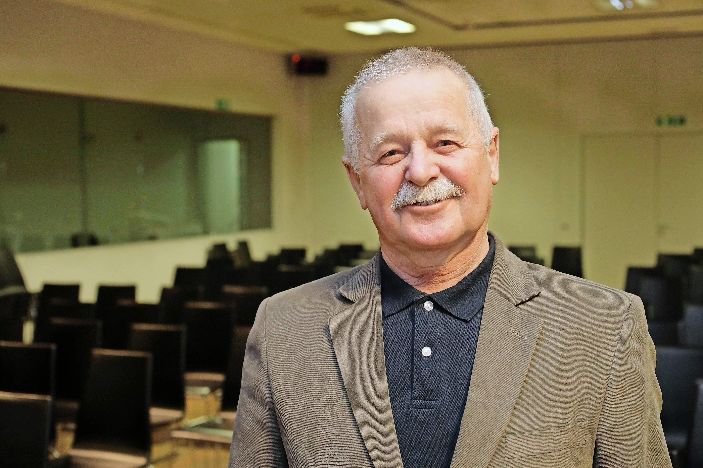

Koroška, njihova srčna stvar
Letos mineva sto let od začetka bojev za našo severno mejo. Začel jih je general Rudolf Maister, z njim pa so šli v boj številni slovenski fantje in možje, utrujeni od komaj končane vojne. Med bojevniki so bili tudi Gorenjci. O njih, o njihovem pogumu in domoljubju ter o vlogi Ljubelja je pripovedoval upokojeni brigadir Slovenske vojske Janez Kavar iz Križev.
 Brigadir Janez Kavar: Letošnja obletnica začetka bojev za severno mejo je priložnost, da Lojzetu Udetu in tržiškim prostovoljcem postavimo v Križah ali v Tržiču primeren pomnik. Pri tem bi lahko sodelovale tudi veteranske organizacije. Foto: Gorazd Kavčič
Leta 1918 in 1919 ni šlo le za boj za severno mejo, ampak tudi za zahodno. To pozabljamo. Italijani so postali zelo agresivni in so segali po naši zemlji in zaveznike prepričevali, da železnica med Trstom in Srednjo Evropo ne sme potekati po jugoslovanskem ozemlju. To bi pomenilo, da bi postal jeseniški trikotnik od Radovljice in Bleda italijanski. Na našo stran so silili po grebenu Karavank, vendar so jih Maistrovi prostovoljci in odred jugoslovanske vojske pod poveljstvom Sava Tripkoviča pognali nazaj. Tu je igrala pomembno vlogo alpska četa, ki ji je poveljeval Rudolf Badjura, med poveljniki pa je bil tudi domačin iz Podkorena Karel Šefman. Žal so se poti izvrstnih častnikov Badjure in Šefmana razšle, je povedal Janez Kavar.
»Naj povem, da nisem zgodovinar, ampak vojak, zato je moja interpretacija teh dogodkov bolj vojaška kot pa politična in zgodovinska,« je povedal brigadir Slovenske vojske Janez Kavar. Z njegovo sodbo o njem samem ne soglašam. Janez zna vojaške dogodke iz naše zgodovine postaviti v realne, tudi v politične okoliščine časa, v katerem so se zgodili, in jim dati celovitejši pomen. Večletno vojaško izobraževanje in službovanje v tujini mu je razširilo pogled in omogočilo dostop do literature, ki je doma ni na voljo.
Med domoljubnimi, narodnoobrambnimi dejanji slovenskega naroda daje Kavar posebno spoštovanje bojem in borcem za našo severno mejo pred sto leti, konec leta 1918 in v prvi polovici leta 1919. Ta naj bi bila z grebena Karavank pomaknjena severneje k reki Dravi in Celovcu in bi se tako slovensko naselitveno in jezikovno področje na Koroškem združilo s Slovenci v tedanji Jugoslaviji oziroma Sloveniji v okviru te države. »General Rudolf Maister je zelo uspešno obranil del slovenskega ozemlja, ki bi verjetno padel v nemške roke. Glavnina teh dogodkov je bila res skoncentrirana na Maribor in okolico, ker je bilo tam najmočnejše nemško jedro, vendar se boji za severno mejo niso bili samo tam, ampak tudi na Gorenjskem. Sila pomembne stvari so se dogajale na območju Karavank in v zahodnem delu Koroške. Z vojaškega vidika sta bili tudi za generala Maistra na tem območju pomembni dve strateški točki: mejni prehod Ljubelj in železniški predor Podrožca. Vloga Gorenjske in Gorenjcev v bojih za severno mejo je premalo znana ali zamolčana, pa tudi Gorenjci sami je ne znamo dovolj poudariti,« pravi brigadir Kavar.
Boji za Ljubelj Gorski prelaz Ljubelj, ki je med tremi karavanškimi prelazi (Korensko sedlo, Ljubelj in Jezersko) v vojaškem oziru najbolj prehoden, je bil v središču boja za severno mejo na Gorenjskem.
»Ima izredno strateško vlogo in zgodovinski primeri to dokazujejo. Če potegnemo premico od najbolj severne točke jadranskega morja do centra Evrope, gre črta preko Ljubelja. Poznamo opise Ljubelja še iz časov pred Valvazorjem. Vemo, kdo vse je potoval preko njega. Kakšne silne vojske, kako pomembni posamezniki. Turki so vztrajno silili preko Ljubelja in Jezerskega, pa jim ni uspelo. Na Ljubelju, preko katerega so hoteli Francozi na Koroško, se je 10. septembra leta 1813 odigrala ključna bitka med Napoleonovo vojsko in Koroško deželno brambo, v kateri so bili Francozi kljub številčni premoči poraženi in vrženi v okolico Kranja, Šenčurja in Mengša. Ta poraz je bil začetek konca Ilirskih provinc. Preko Ljubelja je Hitler načrtoval najkrajšo cestno povezavo z Jadranskim morjem in ukazal gradnjo predora. Zanimiva je zgodba, opisana v knjigi Stephena Esratija Tovariši, maščujte nas, po kateri naj bi zavezniki načrtovali zasutje predora, da bi po končani vojni preprečili nemški umik na Koroško. Ljubelj je odigral svojo vlogo tudi v slovenski osamosvojitveni vojni,« pove Janez Kavar.
Pogum Udeta in tovarišev Zato ni presenečenje, da je bil Ljubelj že po razpadu avstro-ogrske monarhije jeseni leta 1918 ključna točka gorenjskega dela bojev za severno mejo za slovensko kot tudi za koroško nemško stran.
»Po nekaterih podatkih so pripadniki nemške vojaške formacije Volkswehr že 29. oktobra leta 1918 zasedli Ljubelj. Novica o tem je prišla v Tržič, ki je bil takrat precej nemškutarsko mesto. Ključno vlogo pri razpletu zgodbe je prevzel kriški oziroma tržiški rojak Lojze Ude, pravnik in zgodovinar, ki je kot nadporočnik služil v slovitem 2. gorskem strelskem polku, ki je bil v avstro-ogrski vojski najbolj slovenska enota z okrog 80 odstotki vojakov slovenske narodnosti. Pri poveljevanju so uporabljali tudi slovenščino. Vojaki so bili izredno srboriti in pogumni in so se v Coidroipu v Italiji celo dvakrat uprli. Lojze Ude, ki pri tržiških nemškutarjih zaradi domoljubja in hvaljenja majniške deklaracije ni bil preveč dobro zapisan, je konec oktobra prišel na krajši dopust v Tržič. Ko je še v uniformi avstro-ogrske vojske stal na pragu hiše na Koroški cesti proti Cimpru, je peljal mimo kmet iz Svete Ane poln voz hlodov in med vrati stoječemu Udetu zabrusil: Vi tukaj postopate, na Ljubelju so pa Nemci. Ude je v svojih spominih zapisal: Tukaj, na tem pragu sem se odločil. V tem trenutku je treba narediti nekaj častnega,« pravi o trenutku Udetove odločitve Janez Kavar. »Ude je odšel na okrožno poveljstvo narodne straže, v kateri so bili znani tržiški obrtniki, posestniki in drugi slovensko zavedni meščani. Tako je prva tržiška skupina borcev prostovoljcev za severno mejo pod poveljstvom Lojzeta Udeta odšla proti Ljubelju 14. novembra leta 1918. Takrat se je tudi narodna vlada v Ljubljani odločila za resnejšo obrambo Koroške in za vojaškega poveljnika zahodne Koroške določila stotnika Alfreda Lavriča, ki je tudi novačil prostovoljce. Obe skupini, ne vedoč druga za drugo, sta se na Ljubelju srečali in pognali 34 nemških vojakov v beg proti Brodem v ljubeljski dolini. Udetova skupina jim je sledila in sproženih je bilo nekaj strelov. Nemško zgodovinopisje šteje te strele za prve v bojih za Koroško. Tržiški in Lavričevi prostovoljci so zasedli tudi Borovlje,« opisuje prve boje za Ljubelj Janez Kavar.
Boji za severno mejo so se nadaljevali in gorenjski bojevniki, še posebej Tržičani, ki so sodelovali v njih, so častno opravili svojo dolžnost. Varovali so Ljubelj in osvajali južni del zahodne Koroške. »Treba je upoštevati, da so bili to fantje, ki so se komaj rešili vojne in so bili siti vojskovanja, pa so vztrajali,« pove Janez Kavar. Bili so fantje in možje, ki jim je bila Koroška srčna stvar! V ofenzive se je vedno bolj vključevala tudi vojska Kraljevine Srbov, Hrvatov in Slovencev in v tretji ofenzivi maja 1919 tudi zasedla Koroško vključno s Celovcem! Konec junija tega leta je bilo bojev konec, 10. septembra je bila podpisana mirovna pogodba v St. Germainu. Veljati je začela 16. julija 1920. Jugoslovanska vojska se je morala umakniti. Orožje je utihnilo. Nadomestila ga je politika in južni del Koroške je po plebiscitu 10. oktobra leta 1920 postal in ostal avstrijski.
»Lojze Ude je imel izgubo Koroške za največjo nesrečo v svojem življenju. Kot zaveden Slovenec in prepričan domoljub tega ni prebolel. Mejni kamen na vrhu Ljubelja je bil zanj nagrobnik za izgubljeno Koroško,« je o velikem bojevniku in narodnjaku povedal Janez Kavar.
Besedilo je bilo objavljeno na spletni strani Gorenjskega glasa v nedeljo, 18. februarja 2018 16:52 v kategoriji CG Plus. Avtor besedila: Jože Košnjek.